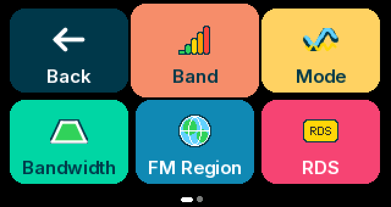
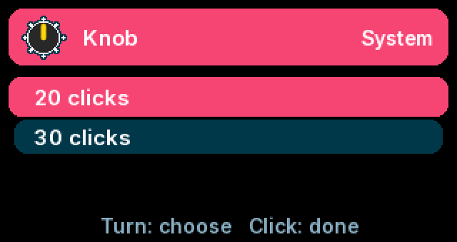
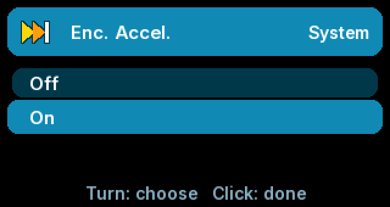
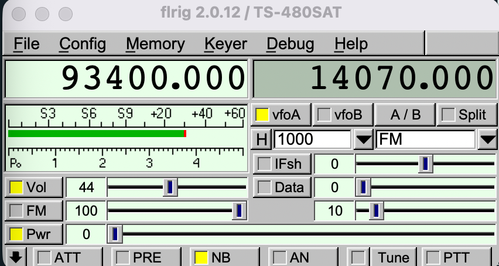
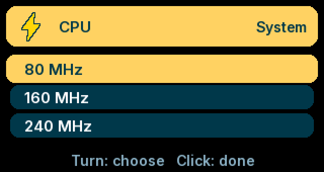
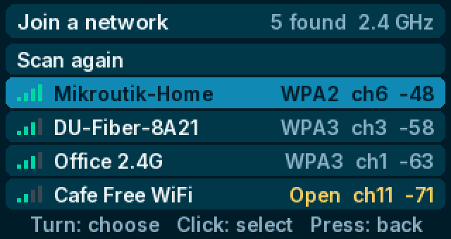
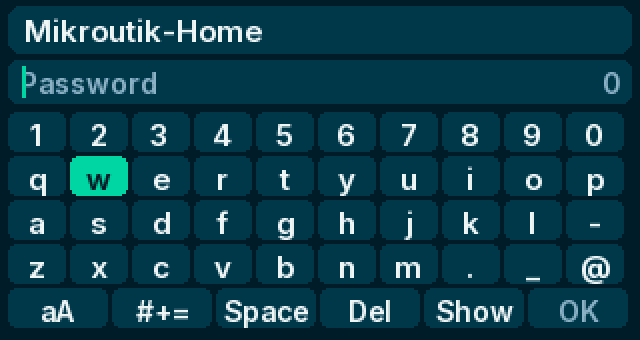
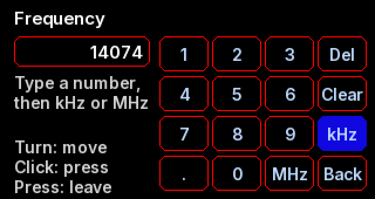
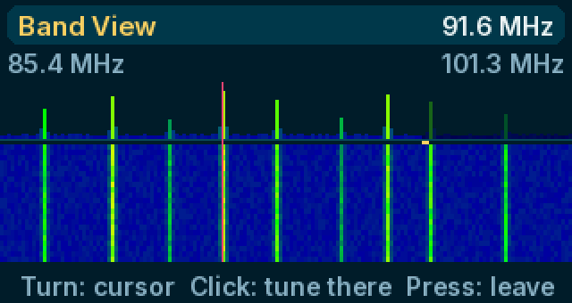
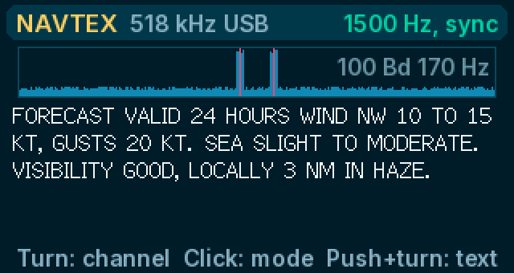

RESONIK firmware user manual for the ATS Mini radio
Pocket receiver for LW · MW · SW · FM with AM · LSB · USB · CW
{{VERSION}}{{DATE_EN}}
resonik.mikroutik.comBrowser installer, the latest version of this manual, and what has changed
Contents
1About RESONIK
2Installing and updating
3Controls and the main screen
4The menuR2
5CW mode
6Band plan
7Clock, time zone and dual clock
8Battery time left
9Automatic attenuation
10BeaconsR2
11Memory scanR2
12Signal loggerR2
13PropagationR2
14EiBi schedulesR2
15CAT control from a computerR2
16FT8 and FT4 decoderR3
17CW decoderR3
18Scan, Auto Scan and SeekR3
19Frequency lock and CPU speedR3
20Wi-Fi and the radio's web pagesR4
21Web ControlR4
22Setup at first startR5
23Freq Entry, Band View and Auto-StoreR5
24RTTY, NAVTEX, PSK31 and WEFAXR5
25Decodes in the browserR5
26Signals to try the decoders withR5
27Update notice, backup and Status pageR5
28Feedback and troubleshooting
29Credits and licence
This manual is written for firmware {{VERSION}} and is updated with every release. The latest version is always at resonik.mikroutik.com. Your radio's firmware version is shown in Menu → System → About.
Sections marked R2 are available from v2.45-r2, R3 from v2.45-r3 and R4 from v2.45-r4 and R5 from v2.46-r5. Menu items are written as they appear on the radio's screen.
1About RESONIK
RESONIK is free, open-source firmware for the ATS Mini pocket receiver (ESP32-S3 processor and SI4732 receiver chip). It is built on the official open-source ats-mini firmware version 2.45, keeps everything it does, and adds features for shortwave listeners and radio amateurs.
CW mode showing the signal's true frequency, a narrow filter and 10 Hz steps
The IARU Region 1 band plan on the tuning scale, with automatic LSB/USB
Dual clock (local and UTC), time zones with summer time, reliable clock sync
Battery time left, and automatic attenuation for very strong signals
A new menu with six groups and full-screen settings pages (R2)
Beacon tracker, memory scan, signal logger, propagation data, EiBi schedules with days, and CAT control (R2)
FT8/FT4 and CW decoders, band scanner (Auto Scan), automatic band plan for Regions 1, 2 and 3, frequency lock and CPU speed (R3)
Web Control: the whole radio in a browser on a phone or computer, with a band scope and a live beacon map; Wi-Fi set up on the radio itself; Seek in SSB and CW (R4)
Bands, modes, memories, RDS, Wi-Fi and Bluetooth work as in the official firmware. The official firmware's full manual: esp32-si4732.github.io/ats-mini/manual.html
2Installing and updating
Make a backup of your radio before installing (see Backup on the ats-mini site). You can always go back to the official firmware over USB.
Installing from the browser (first time)
Open resonik.mikroutik.com in Chrome or Edge on a computer (phones are not supported).
Connect the radio to the computer with a USB-C cable that carries data (not a charge-only cable), and switch it on.
Check the memory type: Settings → About in the official firmware, Menu → System → About in RESONIK. The PSRAM line shows 8192K or 2048K.
In the site's Install section, press the matching button: 8 MB (OSPI) for 8192K, 2 MB (QSPI) for 2048K. Then choose the radio's port from the list.
Do not tick Erase device, so your settings and memories are kept, and press Install. It takes about two minutes, and the radio restarts by itself.
Updating over Wi-Fi (later versions)
Once RESONIK is on the radio, install new versions without a cable: connect the radio to Wi-Fi (section 20), then Menu → System → Update FW. Check looks for a new version and Update installs it. Settings are kept. On R1 the same item is Settings → Update FW.
Installing by hand
Download resonik-ats-mini-{{VERSION}}-ospi.zip (or -qspi) from Releases on GitHub and write these files with esptool: ats-mini.ino.bootloader.bin at 0x0, ats-mini.ino.partitions.bin at 0x8000, boot_app0.bin at 0xe000 and ats-mini.ino.bin at 0x10000.
Project page: github.com/ep3mhb/resonik-ats-mini
3Controls and the main screen
Everything is done with one knob (the encoder), which you turn and press:
TurnTune the frequency; in the menu, move between items and change valuesClickPress and release quickly (under half a second): open the menu and choose an itemShort pressHold for about a second: the volume, or an item's second action; in the menu, close itLong pressHold for more than two seconds: switch the display off and on (the radio keeps playing)
The main screen on the 31 m band
Part of the screen
Meaning
Top left
Signal strength
Top right
Battery: voltage, alternating with the time left (section 8), or the charging symbol
Information box (left)
Step, BW (filter), AGC (gain control or attenuation), Vol, AVC, and the date and time at the bottom
Centre
Band name, mode (for example AM) and frequency
Bottom
Tuning scale with the red marker; on the amateur bands, the coloured band plan strip (section 6)
To change band: click → Tuning → Band, turn to the band and click. The menu closes and the knob tunes straight away.
4The menuR2
A click opens the menu with six groups, each a large coloured button with an icon. Turn the knob to move and click to open a group. The first button in each group is Back. A group with more than five items has a second page; the dots at the bottom show which page you are on. A short press closes the menu from anywhere.
The six menu groups

The Tuning group
Group
Items
Tuning
Band, Mode, Bandwidth, Freq Lock, FM Region, RDS, Scan, Auto Scan, Seek, Step, VFO A/B, Freq Entry, Band View, Capacitor
Audio
Volume, AGC/ATTN, Auto Att., AVC, FM Stereo, SoftMute, Squelch
Memory
Memory, Logger, Mem Scan, Auto-Store
Ham & SWL
Band Plan, Beacons, Calibration, CW Decoder, CW Strip, FT8/FT4, Digital, Dec. Audio, Load EiBi, Plan Area, Propagation
About, Bluetooth, Date/Time, DSP Patches, Knob, Off Timer, TCP Port, Time Zone, Update FW, USB Port, Wi-Fi, CPU, Upd. Notice, Enc. Accel.
Listening controls and settings pages
Controls such as Band, Mode, Step or Volume open their list as before; after a choice the menu closes, so the knob tunes straight away. Settings open as full-screen pages: either a list of values or a number with a bar. Turn to change the value; a click keeps it and returns to the same group.
A list page: Band PlanA number page: Brightness
Knob type: System → Knob
Two kinds of knob are fitted to these radios: 20 clicks or 30 clicks per turn. If the knob skips a step, or needs two clicks for one step, choose the other value. (On the radio's web page the same setting is called Half-step Encoder.)

The Knob page
Knob speed-up: System → Enc. Accel.R5
The knob can count a quick turn as more than one step per click, so that you cross a band with a flick of the wrist and still stop exactly with slow clicks. Enc. Accel. (encoder acceleration) switches this on or off.
Setting
What the knob does
On (the default)
Turned slowly: one step per click. Turned faster: each click counts as 2, 4, 8 and, at full speed, 16 steps. Slow down and it is one step per click again.
Off
Always one step per click, however fast you turn.
A step is whatever you are turning at the time: the tuning step on the main screen (1 kHz, say), one unit of Volume, Brightness, Squelch, Calibration, Sleep Timer or Off Timer, or one line of the Memory list. Lists of choices and the menu itself always move one item per click.
Leave it On if you tune across wide ranges: the ALL band, the FM band, a shortwave broadcast band. Choose Off if the frequency jumps further than you meant when your hand moves quickly, if you go through a band channel by channel and count the clicks, or if you fine-tune CW and SSB in 10 Hz steps and want every click to be the same.
The same setting is in Web Control (Settings → Power and time → Knob speeds up when turned quickly) and on the Config web page (Encoder Acceleration). It is kept when the radio is switched off. It is not the same as Knob above, which is about the kind of knob fitted.
Enc. Accel., on the last System page

Its page: Off or On
Antenna capacitor on medium wave: Tuning → CapacitorR5
Inside the receiver chip, at the antenna input, there is a small tuning capacitor for medium wave. The radio can keep it at one fixed value, or let the chip adjust it by itself every time you tune, to draw the most signal from the antenna.
Setting
What the radio does
Off (the default)
The capacitor stays at one fixed value. Right for almost every radio.
On
The chip adjusts the capacitor by itself each time the frequency changes.
Where it acts: only on the bands MW1, MW2, MW3 and 160M (150 kHz to 3.5 MHz). On FM, on the shortwave bands and on the ALL band nothing changes, whichever you choose.
Which radios it helps: only a radio without the Hi-Z circuit, a small input stage added between the whip antenna and the chip. Most ATS Mini radios sold now have that circuit, and on them this setting does nothing useful; that is why it is off. If you do not know which radio you have, leave it Off, or try it: in the evening tune a weak station on MW2, look at the S-meter, switch Capacitor to On (the radio tunes the station again) and compare. Stronger or clearer: keep On. The same or weaker: go back to Off. Trying it harms nothing.
The same setting is in Web Control (Settings → Receiver → Automatic antenna capacitor) and on the Config web page (Automatic Antenna Capacitor). It is kept when the radio is switched off.
Capacitor, on the last Tuning pageIts page: Off or On
Classic menuR4
Menu → Display → Menu Style → Classic brings back the small list menu of the official firmware, in the corner of the screen. From R4 it has the same six groups as the table above: choose a group and click; the first row of each group is < Back, and the box title names the group. After a setting is changed the menu returns to its group. Tiles switches back to the tile menu.
Three items in Tuning look for stations, each in its own way: Scan, Auto Scan and Seek. Section 18 sets them side by side.
5CW mode
Menu → Tuning → Mode → CW (after AM). The display shows the frequency of the CW signal itself, the way a CW transceiver does: tune until the frequency matches the announced one and the tone sits in the middle of the filter.
Filter
Tone
Use
0.5k (default)
500 Hz
Busy bands, weak signals
1.0k
1000 Hz
Finding signals, faster tuning
1.2k and wider
700 Hz
Listening across the band
The step starts at 10 Hz; change it in Menu → Tuning → Step. CW uses the band's USB calibration value (Menu → Ham & SWL → Calibration).
6Band plan
On the amateur bands from 160 to 10 m, a coloured strip under the scale shows the IARU Region 1 band plan, and the name of the segment you are in appears next to the marker.
40 m, SSB segment40 m, CW segment
Colour
Segment
Cyan
CW only
Yellow
Narrow modes: CW and digital (FT8, PSK, RTTY…)
Red
International beacons (NCDXF/IARU)
Green
All modes, including SSB phone
Grey
Satellite and FM (10 m)
Menu → Ham & SWL → Band Plan:
Off: no strip.
Scale: the strip and the segment name only.
Auto (default): entering a segment also sets mode, filter and step: CW with a narrow filter in the CW segment, USB for digital and beacons, and in the phone segment LSB below 10 MHz and USB above. A short message confirms it. If you change the mode yourself, your choice stays until you leave the segment. From AM it switches only when you tune into an amateur band from outside.
Plan AreaR3
The Plan Area page
Choice
What it shows
All regions
Every region's bands: the Region 1 details wherever Region 1 has the band, and the wider Region 2 and 3 parts outside it (80 m to 4000 and 40 m to 7300 kHz)
Region 1
Europe, Africa, the Middle East (default)
Region 2
The Americas: 160 m from 1800, 80 m to 4000, 40 m to 7300 kHz
Region 3
Asia and the Pacific: 160 m from 1800, 80 m to 3900, 40 m to 7300 kHz
Iran (EP)
Region 1 without the 160, 80 and 30 m bands, which the national table does not allocate
UAE (A6)
Region 1 with 160 m limited to 1810–1850 kHz
Parts the chosen country does not allow are shown dark grey and named NOT ALLOWED.
The Region 2 and 3 plans are simplified and for guidance only. National allocations differ; check your own licence before transmitting with another radio.
7Clock, time zone and dual clock
Menu → System → Time Zone lists UTC first, then every time offset, with city names beside them: for example Dubai and Muscat next to UTC+4. Cities with summer time change automatically.
The Time Zone page
When the time zone is not UTC, the clock line in the information box alternates every few seconds between the local date and time and UTC. UTC is the time the station schedules, the signal logger and the beacon table use. Time: --:-- means the clock has not been set yet.
Menu → System → Date/Time shows the current time in UTC. Turn to change a value, click to go to the next one, and short-press to save. If you change nothing, the clock is not touched.
Setting the clock automatically
The radio has no clock battery, so the time is lost when it is switched off. To set it automatically at every power-on:
Add your Wi-Fi network to the radio (section 20).
Choose Menu → System → Wi-Fi → Mode → Sync Only. The radio connects, sets the clock and switches Wi-Fi off to save battery. (Connect mode also sets the clock, and stays connected.)
Messages: Time synchronized (internet time server), Time set from web (the network blocks time servers, so the time was read from a web server), or Time sync failed with a second line giving the reason. Without Wi-Fi, an FM station sending RDS time also sets the clock; or on the radio's web page, Use Browser Date/Time copies the time and time zone of your phone or computer.
8Battery time left
On battery, the voltage at the top alternates with an estimate of the listening time left, for example ~8h20 (eight hours twenty minutes). The ~ means a typical consumption is assumed; after about ten minutes the radio uses its own measured drain and the ~ disappears. Screen brightness, volume and Wi-Fi all change the result. When charging over USB, the charging symbol is shown.
R5Menu → Display → Battery chooses what is shown beside the battery icon: Volts + time (as described above), Volts, Percent or Icon only.
9Automatic attenuation
In AM, with Menu → Audio → AGC/ATTN set to On, a very strong signal (a local medium-wave station, or a big transmitter at night) can overload the receiver and cause distorted sound and unwanted stations. The radio then adds attenuation step by step, and removes it again on weaker stations. While it is active the information box shows Att: A12 (A for automatic). To switch it off: Menu → Audio → Auto Att.; a manual AGC/ATTN setting always takes priority.
10BeaconsR2
The eighteen beacons of the international NCDXF/IARU project take turns on 14100, 18110, 21150, 24930 and 28200 kHz, ten seconds each, repeating every three minutes. Each sends its callsign in CW and then four dashes at 100 W, 10 W, 1 W and 0.1 W; how many dashes you hear tells you how good the path is.
On 14100: the beacon on the air and the seconds left
On one of these five frequencies (CW or USB), the station line shows the beacon on the air and the seconds left, for example Beacon 4S7B Sri Lanka 6s. The radio's clock must be set.
Menu → Ham & SWL → Beacons and a callsign makes the radio follow that beacon: every ten seconds it changes band with the beacon, from 20 m to 10 m, and waits while it is silent. Tuning by hand ends it.
R5A beacon is on the air for 50 seconds of every three minutes. While it is silent the radio waits on 14.100 MHz in CW, where its next run begins, and it goes there as soon as following starts, so you see at once that it has begun. Tuning by hand, another band or FM ends the follow where you are. Off or Names only in the list, or Stop in Web Control, ends it and takes the radio back to the band, frequency and mode it was on before. In Web Control the top of the Beacons tab has Follow a beacon: choose the beacon, press Start, and Stop to end it; the line beside the buttons says what is being followed and why following did not start or ended (the clock is not set, you tuned away).
R4The first two choices of the list: Off also hides the beacon names, and Names only names the beacon on the air on these five frequencies without following one. The choice is kept across restarts. A live world map of the beacons is on the Web Control page (section 21).
11Memory scanR2
Menu → Memory → Mem Scan steps through the stored memories (at least two) and holds on any with a signal; it carries on four seconds after the signal goes. A signal means the mode's Squelch level if you have set one, otherwise an SNR of 6 dB or more. Turning the knob or a click stops the scan, and the radio stays on that memory.
12Signal loggerR2
Menu → Memory → Logger writes a line every 10 seconds, every minute or every five minutes: UTC time, frequency, mode, band, signal strength (dBµV), SNR (dB) and station name. Leave the radio on one frequency overnight to see when a path opens and closes.
Download the file from the radio's web page with Log (CSV) and open it in a spreadsheet such as Excel. Clear log in the same menu (click to confirm) empties it. Logging stops by itself at one megabyte.
13PropagationR2
Menu → Ham & SWL → Propagation shows the solar flux (SFI), sunspot number, A and K index, X-ray level and the day and night conditions for 80–40, 30–20, 17–15 and 12–10 m, from hamqsl.com (N0NBH). The data is fetched whenever Wi-Fi is connected (including the clock sync at power-on), at most every 15 minutes. Higher SFI and lower K mean better conditions on the higher bands.
14EiBi schedulesR2
Menu → Ham & SWL → Load EiBi loads the seasonal schedule of the shortwave broadcasters, with their days on the air (needs Wi-Fi). A station that only broadcasts at weekends is shown only on those days, and the language and target area follow the name, for example BBC World Service [E > ME] (English, to the Middle East). After updating from R1, load the schedule once more.
15CAT control from a computerR2
Menu → System → USB Port → CAT TS-480 makes the radio answer Kenwood TS-480 commands on the USB port, so programs can read and set the frequency and mode and read the signal strength. In the program (flrig, Hamlib, WSJT-X receive only, fldigi or a logging program) choose the Kenwood TS-480 (Hamlib rig 2028) on the radio's serial port, with split and CAT PTT off; the speed does not matter. Transmit commands are refused, since the radio only receives. For remote-control tools and screenshots, switch back to Ad hoc.
From R5 the choice is called CAT TS-480 (it was CAT) and is on two more ports: TCP Port → CAT TS-480 for a program on the same Wi-Fi network (the radio's address, port 60000), and Bluetooth → CAT TS-480. New with it are VFO A and B, squelch, steps up and down and automatic status reports; the CW mode is mode 3, as on the TS-480.
An example: flrigR5

flrig showing the radio on 93.4 MHz FM
flrig is a free rig-control program for macOS, Windows and Linux, from w1hkj.org; this chapter was tested with version 2.0.12 on a Mac.
On the radio choose USB Port → CAT TS-480 and plug in the cable.
In flrig open Config → Setup → Xcvr. Rig: TS-480SAT. Port: the radio's serial port; on a Mac its name begins with /dev/cu.usbmodem. Baud: any, for example 115200. Leave RTS/CTS, RTS +12 v and DTR +12 v unticked, and press Init.
Under Poll tick S-mtr, or flrig's S-meter stays empty.
Under Restore untick the boxes if the radio should keep what you set from the program. With them ticked, flrig puts the radio back as it found it when it quits.
Over Wi-Fi instead of the cable: on the radio TCP Port → CAT TS-480; in flrig Config → Setup → TCPIP & TCI, enter the radio's address and port 60000 and tick Use tcpip. One program at a time can be connected; Web Control can be open in a browser as well.
What you will see
The program follows the knob, and sets frequency, mode and volume; Tune and transmit do nothing. flrig's volume is in percent: 50 there is 31 on the radio's scale of 63.
flrig shows nothing above 99.999 MHz, because a TS-480 ends at 60 MHz: the upper FM band and memories there are not shown. The radio itself works as usual. Other programs may stop at 60 MHz.
During Seek and Scan the program stands still: the radio answers when the search is over. Auto Scan and Mem Scan are followed as they go.
A program connected over Wi-Fi keeps Wi-Fi on while the FT8, CW or Digital page is open, and follows the frequency the page tunes to.
Quitting the program leaves the radio as it is. If the cable is pulled while flrig runs, flrig stops answering: quit and reopen it.
16FT8 and FT4 decoderR3
Menu → Ham & SWL → FT8/FT4 opens a full-screen page that decodes FT8 signals from the radio's own audio. The radio tunes to the FT8 frequency of the band you are on (or 40 m) in USB with the 3.0k filter. Under the header a waterfall scrolls, and after every 15 second slot the messages are listed with the signal report (dB), audio frequency (Hz) and text; CQ calls are green.
The FT8 page on 40 m
Turn: change band: 160, 80, 40, 30, 20, 17, 15, 12 and 10 m, then the FT4 frequencies of 80 to 10 m (FT4 in yellow, with 7.5 second slots).
Click: clear the list. Short press: leave; the radio goes back exactly as it was.
With the clock set (Wi-Fi sync) it decodes from the first slot. Without a clock it still decodes: the header shows No clock: syncing while it finds the slot timing from the stations it hears (usually a minute or two), then Synced to band.
Bottom left: In is the audio level reaching the decoder (10 to 150 is good) and Last the number of messages in the last slot.
R5The page can also be started and watched from a browser, with the stations' countries and a map (section 25). It takes in the radio's sound up to 3 kHz, which is all FT8 and FT4 use; the 6 kHz choice is in section 25. Signals to check it with are in section 26.
This page needs the V4B board, which wires the speaker line to the processor; other boards show No audio on the decoder input. Wi-Fi is paused while the page is open, unless a browser has Web Control open or a program is connected over Wi-Fi (section 15); then the page runs with Wi-Fi on. On boards that take the audio after the speaker amplifier the speaker stays on (Spk next to the level). Headphones plugged into the radio cut this line: unplug them to decode.
FT8 signals are often 15 to 20 dB below the noise. The telescopic antenna indoors hears few of them: by a window or on a balcony, or with a few metres of wire clipped to the antenna, it makes a big difference. Keep chargers, LED lamps and laptops away from the radio and run it on battery.
17CW decoderR3
Menu → Ham & SWL → CW Decoder turns Morse code into text on a full-screen page, with speed (WPM), tone frequency, a level bar and a key indicator. Tune so the tone is in the middle of the CW filter. Turn: tune, click: clear the text, short press: leave. The speed is followed automatically from about 5 to 40 words per minute. Static crashes and clicks are ignored; characters that cannot be read are shown as *. From R4 the page uses a steady receiver level, so decoding does not depend on the volume setting.
Menu → Ham & SWL → CW Strip → On shows the decoded text at the bottom of the main screen in CW mode. Like the FT8 page it needs the V4B board, and it works while Wi-Fi is off.
18Scan, Auto Scan and SeekR3
Three items in Menu → Tuning look for stations. Their names are alike and they do different things: Scan shows you the band, Auto Scan goes through the band for you, and Seek takes you to the next station. (Auto Scan was called Scanner until R4.)
Scan
Auto Scan
Seek
What it is
A picture of the band. You see at a glance where the signals are, then tune to a peak.
A search that keeps going. You listen through a band without touching the knob.
A jump to the next station, once. You go from station to station at your own pace.
What happens
The radio measures 200 points around your frequency once, with the sound off, comes back and draws the graph: 2 MHz wide, 20 MHz on FM. The red mark is your frequency.
The radio steps along the band from your frequency. On a signal it stops and you hear it (the line says Hold), then it goes on. At the band edge it carries on from the other end.
At every turn of the knob the radio searches in that direction with the sound off and stops on the first station. It stays there until you turn again.
Turn
Tunes as usual, and the graph slides under the red mark. It does not stop on stations.
Sets the direction, right up and left down, and goes on at once.
Right: the next station up. Left: the next one down. Press and turn tunes by hand.
Click
Closes Scan. A short press measures again.
Stops on the current frequency.
Closes Seek. A short press changes to the schedule (below).
The three in Tuning, second pageScan: signal (S, green) and signal to noise (N, blue)Auto Scan moving down on 40 m
Auto Scan stops on a signal at the Squelch level if one is set, otherwise at an SNR of 6 dB or more. In SSB and CW it holds while the station is heard and moves on four seconds after it goes. On AM and FM broadcasts, which never go quiet, it stays five seconds on each station; in FM it skips the next 200 kHz after each station so a strong station does not stop it twice. It moves by the tuning step, at least 1 kHz in SSB, 500 Hz in CW and 100 kHz in FM. If it stops on noise too often, set a Squelch level first.
Seek uses the receiver chip's own search in AM and FM. In SSB and CW (from R4) it searches the band 1 kHz at a time and stops on the first signal, at most 200 kHz per turn; if it finds nothing it says so and goes back to where it started. A short press in Seek puts a clock in its box: every turn then goes to the next frequency on which the EiBi schedule (section 14) lists a station at this hour. That needs the schedule loaded and the clock set, and it is not there on FM.
For a whole band on a full screen, with its strongest signals listed, see Band View in section 23.
19Frequency lock and CPU speedR3
Menu → Tuning → Freq Lock → On: the knob sets the volume instead of tuning, and digit tuning (press and turn) is off. A padlock next to the mode shows the lock is on; it is kept across restarts.
The padlock next to the mode

The CPU page
Menu → System → CPU (called Performance up to R3): 80 MHz (as the official firmware, longest battery), 160 MHz or 240 MHz. Faster makes the screen and menus quicker and uses more battery; the battery estimate shows the difference. The FT8 page always runs at 240 MHz while it is open. R5So does the Digital page, and so does the radio while a browser has Web Control open, so that the page answers quickly; your setting applies again when it is closed. The Status web page shows the speed you set.
20Wi-Fi and the radio's web pagesR4
All Wi-Fi settings are on one page: Menu → System → Wi-Fi. The top says where to open the radio's web pages: the radio's IP address on your home network (or atsmini.local), or 10.1.1.1 after joining the radio's own network. Below are three rows: Mode, Join a network and Power. Click Mode or Power, turn to change the value and click to apply; a short press cancels.
The Wi-Fi page: address, Mode, Join a network, Power

Networks in range with signal, security and channel
Mode
What it does
Off
Wi-Fi off (least battery use)
AP Only
The radio makes its own network: join ATS-Mini and open http://10.1.1.1
AP+Connect
Its own network, and at the same time connected to your home network
Connect
Connected to your home network only
Sync Only
Connects at power-on, sets the clock and switches off
Power: Normal (17 dBm), Low (13 dBm) or Lowest (8.5 dBm). Lower power helps boards that restart when Wi-Fi transmits and saves some battery, at the cost of range.
Joining your home network on the radio
Join a network lists the networks around you, strongest first. Choose one and type the password on the on-screen keyboard: turn the knob to move over the keys and click to type each character. aA gives capitals (for one letter), #+= symbols, Del deletes, and Show shows the password. The password is shown as stars with only the last character visible, so you can spot typing mistakes. OK lights up after eight characters. The network is saved, the radio connects at once (AP+Connect mode) and shows its IP address in large type.

The on-screen keyboard for the password
The radio has 2.4 GHz Wi-Fi only; 5 GHz networks are not listed. If your router uses one name for both bands, the radio connects on 2.4 GHz.
The radio's web pages (dark theme) hold the settings, memories, updates and the signal log. Networks can still be saved from their Wi-Fi page too. At http://<IP>/update a version's …-ota.bin file can be installed directly.
21Web ControlR4
With the radio and a phone or computer on the same network, open http://<IP>/control (or tap Control on the radio's web pages). The whole radio is in the browser, and every change applies to the radio at once and is saved. The top always shows the frequency, band, mode, step, filter, S-meter, battery (volts and percent), the memory you are on, and the RDS station name and text.
The Receiver tab on a phoneThe Beacons tab: world map of the beacons
Tab
What it does
Receiver
Step tuning, Seek, a frequency box (kHz; MHz on FM), mode buttons (with Stereo or Mono on FM), Band, Step, Filter and AGC lists, volume, a button for every band, and the band scope: Sweep measures the signal at 41 points around the frequency; tap a bar to tune there. From R5, Band View starts the radio's Band View and shows it in the browser (section 23)
Memory
Tune to a memory, save the current station, delete one
Beacons
A map of the eighteen NCDXF/IARU beacons. The five on the air pulse in their band's colour. Tap a frequency to tune there in CW: in every ten second slot the radio measures the signal and colours that beacon green (heard well), yellow (weak) or grey (not heard). After one three minute cycle you see which parts of the world the band is open to. Tap a beacon to follow it across the bands, or use Follow a beacon with Start and Stop at the top (R5, section 10)
Decodes R5
Starts and stops the decoders on the radio and shows what they decode: waterfall, FT8 and FT4 messages with country and flag, a map, CW, RTTY, NAVTEX and PSK31 text and WEFAX charts (section 25)
Settings
Every setting of the radio's menus, in five groups. Bluetooth, USB and Wi-Fi modes and firmware updates stay on the radio itself, so the connection cannot be cut
More
The radio's own screen with its knob and buttons (for its menus and the FT8 and CW pages; sent only while shown), and Listen
R5Beside the station name the page shows the radio's clock: UTC and, when the radio's time zone is not UTC, Local; Clock not set until the radio has the time. Short notes from the radio (a seek that found nothing, a beacon being followed) appear at the bottom of the window. While a browser has the page open the radio runs its processor at full speed so that the page answers quickly; this uses a little more battery.
Listening in the browser (experimental)
Listen plays the radio's sound in the browser. It works on V4B boards only, and the quality is about that of a telephone: the sound is sampled from the speaker line at 8 kHz, and Wi-Fi and the receiver share one converter. Hiss filter reduces hiss. Radio speaker while listening makes the radio's speaker quieter, but on the V4B that also weakens the browser sound, so Normal gives the best sound. It works best in Chrome.
On V4B boards the decoders and Listen take their audio from the speaker line. With headphones plugged into the radio this line is cut: the FT8, FT4 and CW decoders and the browser sound do not work. Unplug the headphones to decode.
22Setup at first startR5
A newly installed radio, or one after a factory reset, asks four things in turn: the time zone, the knob (20 or 30 clicks per turn), the band plan for your licence, and whether to set up Wi-Fi now. Turn to choose, click for the next question, short press to skip. Everything can be changed later in the menu. A radio updated from an earlier version keeps its settings and does not show these pages.
The first of the four questions
To see it again, do a factory reset: switch the radio off, hold the knob pressed, switch it on and keep holding until Resetting Preferences shows.
A factory reset erases the settings, the memories, the Wi-Fi networks and the files on the radio (schedule, signal log, start picture, DSP patches). Save a backup first on the Config web page (section 27) and restore it afterwards.
23Freq Entry, Band View and Auto-StoreR5
Typing a frequency: Tuning → Freq Entry
A number pad to go straight to a frequency. Turn the knob to move over the keys and click to press one: type the number, then kHz or MHz. So 14074 and kHz, or 14.074 and MHz, both tune 14.074 MHz. When the frequency is outside the band you are on, the radio changes band, and goes to or from FM as needed. Del removes the last digit, Clear all of them, and Back or a short press leaves without tuning. It takes 150 kHz to 30 MHz and 64 to 108 MHz.
Seeing the band: Tuning → Band View
Band View sweeps 160 frequencies around the one you are on, again and again. The top of the page is the sweep in progress as bars, filled in from the left as it goes; under it the finished sweeps form a waterfall, the newest on top. Weak signals are blue, strong ones yellow. The line under the title gives the frequencies the view starts and ends at, and the title line the frequency under the cursor. The sound is off meanwhile, and a sweep takes some seconds, since the receiver has to settle on every frequency. Turn: move the cursor, click: tune there, short press: leave.

Freq Entry: 14074, then kHz

Band View on the FM band
In Web Control, Band View in the Band scope box starts the same on the radio and shows it in the browser; click a peak to tune there, which ends it, or press Stop.
Filling the memories: Memory → Auto-Store
Auto-Store sweeps once around the frequency you are on and puts the strongest stations in free memory slots, named Auto. Stations that are already stored are skipped.
24RTTY, NAVTEX, PSK31 and WEFAXR5
Menu → Ham & SWL → Digital opens a full-screen page that decodes five kinds of signal from the radio's own sound. It switches the radio to USB with the 3.0k filter, draws the spectrum of what it hears with marks on the tones it listens to, and writes the text under it. The decoder finds the signal by itself: tune until the signal is in the picture.
RTTY DWD: the frequency the radio is on, the two tones, the tone frequency in green, the text
Mode
What it decodes
RTTY
Amateur radioteletype: 45.45 baud, 170 Hz shift. Normal and reversed stations are read alike.
RTTY DWD
The German weather service: 50 baud, 450 Hz shift. Weather for shipping, mainly in English.
NAVTEX
Safety messages for ships: navigational warnings and weather. Eleven channels: 518 kHz (in English), 490 kHz (in the country's language), 4209.5 kHz, and eight short-wave channels for the high seas, from 4210 to 26100.5 kHz.
PSK31
An amateur mode typed by hand, 31 baud, a few hertz wide.
WEFAX
Weather charts (radiofax), 120 lines a minute. The chart is drawn on the screen and, larger, in the browser (section 25), where Save picture downloads it.
Click: the next mode. Turn: tune (in NAVTEX: the next channel). Short press: leave; the radio goes back exactly as it was.
The header shows the mode and the frequency the radio is tuned to (in NAVTEX the channel). Top right is the tone frequency the decoder has found, in green, or No signal; the mode's speed and shift stand in the corner of the spectrum. With no signal nothing is written, so noise does not fill the screen with letters: No signal means that nothing is being received there, not that something is broken. Stations to check each mode with are in section 26.
The screen shows the last five lines as they arrive. The radio keeps the whole text.
Tuning to a station
The page works in USB, and its header shows the frequency the radio is tuned to. A station list gives the frequency of the signal itself; the radio has to be tuned a little below it, so that the tones come out as sound around 1500 Hz, in the middle of the spectrum. Type the frequency with Menu → Tuning → Freq Entry (section 23) and then open the page, or turn the knob on the page.
Mode
Tune the radio to
Example
It is right when
RTTY
No fixed frequencies: turn slowly through the RTTY part of a band.
20M: 14080 to 14099 kHz, mostly at weekends.
The red lines sit on two peaks 170 Hz apart, the number top right is green, and text appears.
The red lines sit on two peaks 450 Hz apart, about 1500 Hz in green; RYRYRY, then the weather text.
NAVTEX
Nothing to tune: turn the knob to the channel and the page tunes it, 1.5 kHz below.
Channel 518 kHz: the radio is on 516.50 kHz.
sync stands beside the green number.
PSK31
The listed frequency itself.
14070.00 kHz, also 7040.00 kHz.
Thin steady lines in the spectrum; the red line sits on the strongest.
WEFAX
1.9 kHz below the listed frequency.
Listed 8040 kHz: tune 8038.10 kHz.
The chart builds up line by line.
You need not be exact with RTTY and RTTY DWD: the decoder looks for the two tones across the whole spectrum and moves the red lines onto them, so anywhere from 1 to 2 kHz below the listed frequency works.
Reading the text back
A NAVTEX message or a weather bulletin is longer than five lines. The radio keeps everything it has decoded since it was switched on, about 16 000 characters, with the line breaks as the station sent them.
Push the knob and turn it: the spectrum makes room for seven lines of the whole text. Top right is the line you are on and how many there are; the bar on the right shows the place.
Turn: scroll. Click: back to the live text. Short press: leave the page.
Every start of a decoder that receives something writes a head line in yellow: the mode, the frequency and the UTC time.
The browser shows the same text in a box and saves it to a file (section 25).

NAVTEX on 518 kHz, locked to a stationReading back: the first of 17 lines
Like the FT8 page, this page needs the V4B board and the headphones unplugged, and it pauses Wi-Fi unless a browser has Web Control open or a program is connected over Wi-Fi.
25Decodes in the browserR5
Open Web Control (section 21) and its Decodes tab. Wi-Fi stays on while Web Control is open, and with a decoder running on the radio the tab shows:
the band as a waterfall;
every FT8 and FT4 message with the station's country and flag;
a map of the stations that sent a locator; type your own locator in My locator to see lines from you;
the whole text of RTTY, NAVTEX and PSK31 in a box that scrolls, with Save text; the text of CW; the WEFAX chart with Save picture;
the NAVTEX timetable: which station is on the air now and which comes next;
DX alarm: type callsigns or countries to hear a tone when one is decoded; Save log downloads the list.
The Decodes tab: decoder row and waterfallFurther down: locator, DX alarm, the messages
Starting a decoder from the browser
The row Decoder on the radio starts and stops the decoders without touching the radio. Choose FT8 or FT4 and a band, or CW, RTTY, RTTY DWD, NAVTEX, PSK31 or WEFAX, and press Start. FT8 and FT4 go to the band you choose and NAVTEX to the channel you choose in the second list; the others decode where the radio is, so tune first. Stop closes the decoder and the radio goes back to where it was. The line beside the buttons says what is running.
The whole text, and saving it
For RTTY, NAVTEX and PSK31 the box under the waterfall holds the whole text the radio has decoded, with its line breaks, and follows it as it grows. Scroll up to read; it stays where you leave it. The browser fetches from the radio whatever it has not got yet, so text decoded before you opened the page is there too.
Save text downloads it as a text file. Clear text empties the box on this page only.
The two red lines on the waterfall are the tones the decoder listens to, as on the radio. Beside the mode, top right, sync means NAVTEX is locked to the station.
The waterfall with the two tones, the whole text, Save text
NAVTEX timetable
Choose NAVTEX and a timetable opens under the buttons, for the channel in the second list. Every NAVTEX station sends for ten minutes every four hours, at the turn its letter gives it: A at 00:00 UTC, B at 00:10, and so on to X at 03:50. The same letter opens each of its messages: ZCZC FA12 comes from station F.
now, in green, marks a station that is on the air, with the minutes it has left. The others follow in the order they come.
Type My locator (further down the tab) and the table shows the distance to each station. Order then sorts by time or Nearest first, and Range keeps the stations within 1500, 3000 or 6000 km.
A click on a line starts NAVTEX on that channel. Show all opens the whole list.
518 kHz is in English, 490 kHz in the country's own language, 4209.5 kHz reaches far on short wave. Night is best on 518 and 490 kHz. The eight short-wave channels further down the list carry safety information for the high seas; few stations send there and they have no timetable.
NAVTEX chosen: the timetable, nearest stations of a listener in Dubai
The table holds 238 stations, compared on 22 Nov 2026 with public station lists (section 29). Stations change, and a decoder on a pocket radio is not for navigation.
Decoder audio: 3 kHz or 6 kHz
The FT8/FT4 and Digital pages listen to the radio's own sound, and this setting says how much of it they take in.
Setting
What it does
3 kHz fast (the default)
The sound up to 3 kHz. That holds everything FT8, FT4, RTTY, NAVTEX, PSK31 and WEFAX use, at half the work, so the radio and Web Control stay quick. Leave it here.
6 kHz full
The sound up to 6 kHz, as versions before R5 took in. The radio works twice as hard and the browser can get slower. Choose it only if you get fewer decodes than you expect, and compare the two on the same band for a few minutes each.
On the radio it is Menu → Ham & SWL → Dec. Audio, set before you open the FT8/FT4 or Digital page. In Web Control it is the Decoder audio list on the Decodes tab; there the change applies at once, and the waterfall starts again. The tab shows which is in use (3 kHz audio or 6 kHz audio). The CW decoder is not affected.
26Signals to try the decoders withR5
A decoder that shows nothing is usually listening to an empty frequency. These signals are on the air often enough to check each decoder, on the radio's own page or from the Decodes tab of Web Control. No signal or Nothing decoded yet means that nothing was received, not that something is broken. Frequencies and times change: look them up again if a station is not there.
Start with FT8 on 20 m by day. If that fills the list, the radio, the antenna and the decoder input are all working, and an empty page in another mode only means that the station is not there or is too weak. By a window, or with a few metres of wire on the antenna, far more is heard.
Decoder
Where to tune
What to expect
FT8
20M, 14.074 MHz (the page tunes it). By day also 15M and 10M, at night 40M and 80M.
The busiest signals on short wave: a list of callsigns within a minute on an open band. Check this first: if FT8 decodes, the antenna, the band and the clock are in order.
FT4
20M, 14.080 MHz. Far fewer stations than FT8, most of them at weekends and in contests.
Short blocks of about 4.5 seconds in the waterfall. Compare with FT8 on the same band: with FT8 full and the FT4 waterfall empty, nobody is on FT4.
CW
The beacons on 14.100 MHz (section 10), or the low end of 40M and 20M: 7.000 to 7.040 and 14.000 to 14.070 MHz.
Callsigns and CQ calls. A beacon sends its callsign, then four long dashes.
RTTY DWD
The German weather service, day and night on 4583, 7646 and 10100.8 kHz. Tune 1.5 kHz below in USB: 10099.3 kHz, or 7644.5 and 4581.5 kHz at night.
Lines of RYRYRY between the bulletins, then weather reports and forecasts, mainly in English. The tone frequency shows in green in place of No signal. It comes from Germany: far away it is weak, and best in the evening.
RTTY
Amateur RTTY, 14.080 to 14.099 MHz, mostly at weekends and in contests.
CQ calls and contest exchanges in capitals.
NAVTEX
518 kHz (the page tunes it; the knob steps to 490 and 4209.5 kHz). Every coast station sends for ten minutes every four hours, each at its own time: the NAVTEX timetable of the Decodes tab (section 25) shows who is on the air and who comes next. Night is best.
Navigational warnings and weather for ships, starting with ZCZC and ending with NNNN.
PSK31
14.070 MHz USB, also 7.040 MHz. Few stations these days.
Narrow steady lines in the spectrum; small and capital letters, typed by hand.
WEFAX
Northwood (United Kingdom): 4610, 8040 and 11086.5 kHz. Tune 1.9 kHz below in USB: 8038.1 or 11084.6 kHz by day, 4608.1 kHz at night.
A weather chart, drawn line by line: a whole chart takes 10 to 20 minutes. A slanted picture still shows that the signal is being read.
27Update notice, backup and Status pageR5
New version notice
With Wi-Fi connected, the radio looks for a newer RESONIK release a few minutes after joining the network and then once a day. When there is one it shows a page with Update now, Later and Skip this version; settings and memories are kept by an update. A small arrow beside the Wi-Fi icon, and a banner on the radio's web pages, show that an update is waiting. Menu → System → Upd. Notice → Off stops the radio looking; Menu → System → Update FW still checks and updates when you ask.
The page shown when a newer version is out
Backup and restore
The radio's Config web page has Backup and Restore at the bottom. Download a backup saves one file with all the settings, bands, memories and Wi-Fi networks. Restore takes such a file, from this or another radio, replaces everything with it and restarts the radio. Make a backup before a factory reset, and to set up a second radio like the first.
The backup file holds your Wi-Fi passwords. Keep it private.
Status page
The first of the radio's web pages, Status, shows the address, firmware, clock, band and frequency, and from R5 also how long the radio has been running, why it last restarted (switched on, update, crash, watchdog, low voltage), the processor's temperature and the speed you set, free memory and the Wi-Fi signal. Each figure says in a word whether it is good, fair or bad, in green, yellow or red. If the radio ever restarts by itself, read Last restart here before switching it off, and send it with your report.
The Status page: each figure with its verdict
28Feedback and troubleshooting
Every report, a small bug or a suggestion, helps the next version. Write in the Telegram group or open an Issue on GitHub: github.com/ep3mhb/resonik-ats-mini/issues. Please include:
The radio model (V3, V4 or V4B)
The firmware version (Menu → System → About)
What you did and what happened
If possible, a photo or short video of the screen
Common problems
Problem
Solution
The knob skips steps, or needs two clicks for one step
Menu → System → Knob: the other value (20 or 30 clicks)
The clock shows --:--
Section 7: Wi-Fi Mode Sync Only, or set it by hand
No beacon name is shown
The clock must be set and correct, and Beacons not set to Off
The Install button shows no port
Try another USB cable (a data cable); Chrome or Edge on a computer
You want the old menu
Menu → Display → Menu Style → Classic
The EiBi schedule does not show the days
Load EiBi once more
FT8, CW or Digital page: No audio, or In 0
These pages need the V4B board (Hardware page of the site), and the headphones unplugged
A decoder shows No signal
Nothing is received there: try the signals of section 26, FT8 first
The radio restarted by itself
Note Last restart on the Status web page (section 27)
FT8 decodes nothing
Try another band (20 or 10 m by day, 40 m at night); take the radio to a window and unplug the charger
The radio's web page does not open
The address is at the top of Menu → System → Wi-Fi; the phone or computer must be on the same network
29Credits and licence
RESONIK edition: EP2MHB (Mohammad Bahrololoum). Based on ats-mini by PU2CLR (Ricardo Caratti), Volos Projects, Ralph Xavier, Sunnygold, Goshante, G8PTN (Dave), R9UCL (Max Arnold), Marat Fayzullin and all contributors. The FT8 decoder uses ft8_lib by Karlis Goba, following the epiHATR fork; some fixes come from the jokubasver and mattafaak forks. The source code is on GitHub under the MIT licence.
The NAVTEX station table was compared with Alan Gale G4TMV's World NAVTEX Database for DXers (ndblist.info), with Wikipedia's List of Navtex stations and with the station file of fldigi.
RESONIK is not affiliated with the makers of ATS Mini radios. Installing unofficial firmware is at your own risk; a backup lets you go back. 73 de resonik.mikroutik.com
 RESONIK
RESONIK